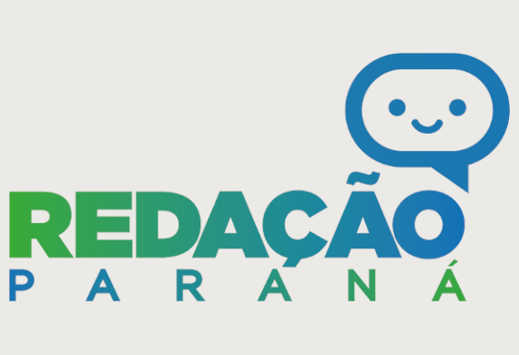

Trabalho de Programação
Nome: Samile Malman
N°: 28
Série: 3°C
Agrinho

"Agrinho: Festejando a conexão campo e cidade" celebra a interdependência entre o meio rural e urbano, destacando a importância da agricultura sustentável, troca cultural e inovação. É uma homenagem ao ciclo que une produção e consumo, valorizando o campo nas cidades e promovendo maior respeito e conscientização. A festa simboliza a união essencial para o desenvolvimento mútuo e equilibrado.
Conceitos Importantes:
Laços de repetição: ...
Redação Paraná
A plataforma Redação Paraná foi criada para apoiar estudantes no desenvolvimento da escrita, com foco na prática de redações de gêneros diversos e temáticas atuais. Oferece ferramentas para o letramento digital e feedback contínuo dos professores. Também disponibiliza aos docentes um banco de propostas alinhadas ao currículo escolar.
Outros temas:
Exemplos: ...
Campo Cidade

O conceito de campo se refere ao espaço rural, ligado à agricultura e à vida comunitária, enquanto a cidade é marcada pela urbanização, complexidade e diversidade de serviços. A relação entre esses dois mundos é histórica e dinâmica, refletindo desafios e oportunidades de desenvolvimento social e econômico. A urbanização e a tecnologia têm diluído algumas dessas fronteiras, buscando integrar práticas sustentáveis.